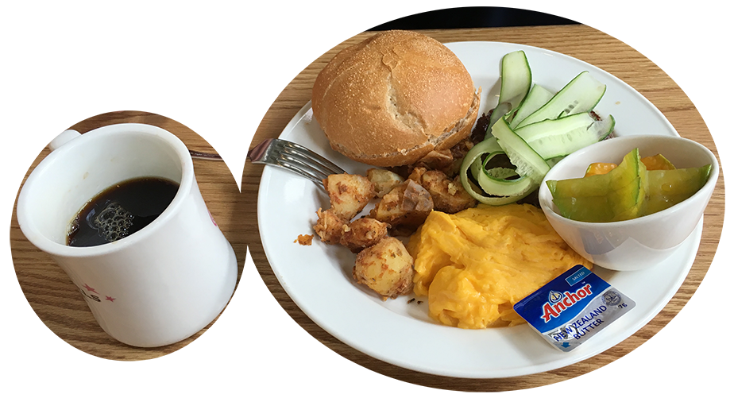

- 用餐地點：N.Y. bagel 信義店
- 美味度：5/5
- 交通方便度：5/5
平常吃飯幾乎不拍照的，不過難得受老師之邀來吃早午餐，多少學少女拍了一下。 整間店很大，天花板挑高、位子像迷宮一樣，怕打擾到其他人用餐所以就不拍周圍了。 它的官網有各分店的照片，可以想像一下環境。
這是我點的
花園大道莓果鬆餅佐鮮奶油與特製果醬
Park Av. Berrys Pancake with Special Jam & Cream
$290
吃起來……很適合吃過一點早餐的女孩。
也很適合傾聽者。不怕冷掉軟掉酸掉，一直都會很好吃的在那兒等你。
我沒吃過其他有名咖啡廳的鬆餅，不過就算世間存在著令人銷魂的鬆餅，大概跟它相去不遠吧？
這種薄薄一層一層的比較少見。被NY bagel這樣一做起來，口感反而有點像法式千層蛋糕。
但這玩意兒充滿了水果，堅固的牽著彼此，不太散。吃起來不太濕，口感綿密，卻不膩，很容易忘了它是甜點。

這是老師點的
漢堡肉排早午餐
Crossover Burger Brunch
$380
早午餐適合誰吃呢……一家人來享用應該不錯。如果是朋友聚會，話還沒說完就涼掉了。
早午餐應該算是這間店的招牌。 從菜單來看，料很豐富，份量也適中。

這邊點餐點，指定飲料可以無限續杯。紅茶、美式咖啡都包含在內。
整體感想：覺得來這種店會充滿愉悅感呢！
不清楚對男生來說如何，不過如果要討人開心，例如慶生之類的，這裡適合！